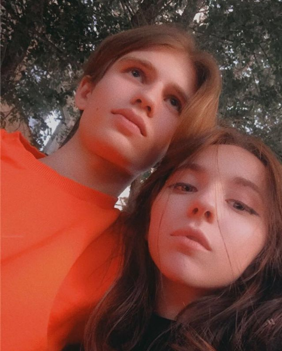
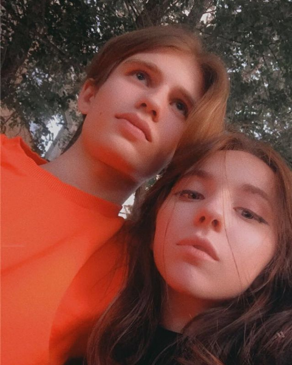

Тут я решил продолижть свою открыточку.
Я слишком зятянул с твоим местом в моей жизни, но я ведь поздравляю тебя, а не нас)). Пройдусь по пожелаениям.
Желаю счастья, но только на год (мне же нужно тебе в следующем году его снова желать). Исполнением этого пожелания занимюсь я постоянно и руки опускать не собираюсь. Желаю преданных друзей и их не обязательно должно быть много.
20 лет не такой страшный возраст и тем более не старый, ты видела вообще чем люди занимаются 27-30 лет? Сидят в кресле и вяжут внукам следочки? Возрост - это просто цифра, которая не должна тебя ограничивать.
Я верю, что ты осилишь все свои цели и переживишь все трудности и проблемы (главное, чтобы ты тоже в это верила).
Тут ты можешь посмотреть, на КРАСИВУЮ себя и вспомнить этот год.
 

Я помню про календарь! пока не получилось((
Как мы первый раз гуляли? Помню как встретил тебя у севера и сразу ноги подкосились. Пришлось очень сильно стараться, чтобы не подавать вида неуверности). Потом ты мне отдала наконец-то пачку КОТОРУЮ Я ВСЕ ЕЩЕ ХРАНЮЮЮЮЮЮ. В МЖК мы решили пойти к Кате (а еще попросили воды вынести), и я ошибся с подъездом, потом вы смеялись с того, как я открываю двери((. Покормили грустную собачку и пошли назад к моему дому.
С тобой дни на карантине стали сказкой, в котрой я с нетерпением ждал когда приедет принцесса.